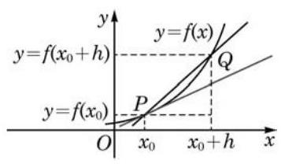
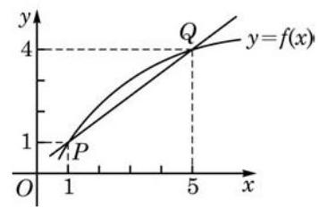
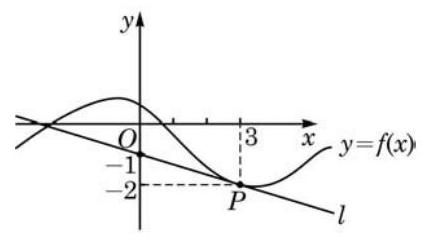

例题 1例 1 自由落体运动中，物体下落的距离 (单位: ) 与时间 (单位: )近似满足函数关系 . 试求物体在 时的瞬时速度. 教材 L33–34答案与解析收起 / 展开解 对不同时间段长度值 附近时间段 或者 内的平均速度为 得到表 5-1. 表 5-1 上的 上的 -0.119.50.120.5-0.0119.950.0120.05-0.00119.9950.00120.005-0.000 119.99950.000 120.000 5-0.000 0119.999 950.000 0120.000 05............ 在表 5-1 中,我们通过不断缩小 的绝对值,发现在 趋近于 0 时, 平均速度趋近于一个确定的值 20. 因此, 从表中数值我们可以初步判断物体在 时的瞬时速度为 . 下面用数学的计算与推理证实我们的判断. 当 时, 附近时间段 或者 的平均速度是 因为当 趋近于 0 时, 趋近于 20,所以物体在 时的瞬时速度为 . 左边的式子在 时是显然的. 在 时，时间段 上的平均速度一开始应写为 ,它和 时一样,也可统一地写为 . 教材 L35–64
例题 2例 2 已知在使用某种杀菌剂 小时后室内的细菌数量为 (1)求 ； (2) 的实际意义是什么？ 教材 L79–88答案与解析收起 / 展开解(1)当 时，在使用杀菌剂 10 小时附近的时间段 或者 内,细菌数量关于时 间的平均变化率为 从而,令 趋近于 0,就得到 (2) 的实际意义是细菌数量在 时的瞬时变化率. 它表明在 附近,细菌数量大约以每小时 的速率减少. 教材 L89–116
练习5.1(1) · 1 自由落体运动中，物体下落的距离 (单位: ) 与时间 (单位: ) 近似满足函数关系 . (1)求物体在 时间段内的平均速度； (2)求物体在 时的瞬时速度； (3)求物体在 时的瞬时速度. 教材 L119–126答案与解析收起 / 展开 (1) . (2) . (3) . 教参 L318–318
练习5.1(1) · 2 将石子投入水中，水面产生的圆形波纹不断扩散. (1)当半径 从 增加到 时,求圆周长相对于半径的平均变化率; (2)当半径 时,求圆周长相对于半径的瞬时变化率. 教材 L127–132答案与解析收起 / 展开 (1)2π. (2)2π. 教参 L319–320
例题 3例 3 如图 5-1-3,曲线 是圆 在 轴及其上方的部分, 和 是该曲线上的两点. (1)求割线 的斜率； (2)对正整数 ，令 均在该圆周上,且随着 的增大越来越接近点 . 借助信息技术工具,适当地计算一些割线 的斜率,观察并总结当 逐渐增大时,割线 的斜率的变化趋势. 教材 L151–156答案与解析收起 / 展开解 (1) 割线 的斜率是 (2)割线 的斜率是 借助计算器或计算机可以得到表 5-2 中关于 的近似值 (结果精确到 0.000 000 001): 表 5-2 1(0.000000000, 1.414213562)-0.4142135625(0.800000000, 1.166 190 379)-0.83095189510(0.900000000, 1.090871211)-0.908712115100(0.990000000, 1.009 900 985)-0.9900985251000(0.999 000 000, 1.000 999 001)-0.999 000 99910000(0.999 900 000, 1.000 099 990)-0.999 900 010100000(0.999990000, 1.000010000)-0.999 990 0001000000(0.999999000, 1.000001000)-0.999 999 00010 000 000(0.999999900, 1.000000100)-0.999 999 898......... 观察表 5-2 可知,当 逐渐增大时,割线 的斜率逐渐减小, 并趋近于 -1 . 由例 3 可以看出,根据现在的定义,曲线在点 处的切线的斜率是 -1,容易求得它的点斜式方程是 , 即 . 另一方面,因为平面几何所定义的圆的切线垂直于过切点的半径,即向量 是切线的法向量,用直线的点法式方程可求出切线的方程也是 . 这就说明,对于圆来说,两个切线的定义一致. 对于任意曲线 ,如何从定义出发求它在点 处的切线? 例 3 给我们的启示是先求切线的斜率, 且进一步揭示了斜率的求法: 如果记 ,那么  图 5-1-4 其中 . 当 增大时, 趋近于 的稳定值就是 这个方法适用于一般情况. 如图 5-1-4,在曲线上点 的附近取一点 ,割线 的斜率 就是函数 在以 和 为端点的区间上的平均变化率. 当点 沿曲线趋近于点 时,割线 的斜率趋近于某一稳定值, 这个稳定值 就是函数 在 处的瞬时变化率 . 因此,函数 在 处的导数 就是曲线 在点 处切线的斜率. 从而,函数 在点 处的切线方程为 教材 L157–208
例题 4例 4 已知 ,求曲线 在点 处的切线方程. 教材 L209–210答案与解析收起 / 展开解 先求曲线 在点 处切线的斜率 : 当 时, 从而当 趋近于 0 时, 因此,曲线 在点 处切线的斜率为 2 . 于是,所求切线方程为 即 教材 L211–236
例题 5例 5 已知 ,求曲线 在点 处的切线方程. 教材 L237–238答案与解析收起 / 展开解 先求曲线 在点 处切线的斜率 : 当 时, 从而当 趋近于 0 时, 因此,曲线 在点 处切线的斜率为 0 . 于是,所求切线方程为 在例 5 中,函数 在 处的导数为零,即曲线 在点 处的切线斜率为零,此时曲线的切线是一条水平直线. 通常, 我们将导数为零的点称为函数的驻点 (stationary point),曲线在其驻点处的切线是一条水平直线. 例如, 是函数 的驻点. 尝试寻找例 3 和例 4 中函数的驻点. 教材 L239–268
练习5.1(2) · 2 借助函数图像, 判断下列导数的正负 (可利用信息技术工具): (1) ，其中 ； (2) ,其中 . 教材 L273–276答案与解析收起 / 展开2.(1)正. (2)负. 教参 L325–326
习题5.1A · 1 自由落体运动的位移 (单位: ) 与时间 (单位: ) 满足函数关系 ( 为重力加速度). (1)分别求[4,4.1]、[4,4.01]、[4,4.001]这些时间段内自由落体的平均速度； (2)求 时的瞬时速度； (3)求 时的瞬时速度； (4)借助(3)的结果，求 时的瞬时速度. 教材 L281–290答案与解析收起 / 展开 (1) . (2) . (3) . (4) . 教参 L331–334
习题5.1A · 2 竖直向上发射的火箭熄火时上升速度达到 ，此后其位移 (单位: )与时间 (单位: )近似满足函数关系 . (1)分别求火箭在 、 这些时间段内的平均速度； (2)求火箭在 时的瞬时速度； (3)熄火后多长时间火箭上升速度为 0 教材 L291–298答案与解析收起 / 展开 (1) , . (2) . (3) . 教参 L335–335
习题5.1A · 3 某水管的流水量 (单位: ) 与时间 (单位: ) 满足函数关系 ,其中 (1)求 在 处的导数 ； (2) 的实际意义是什么？ (3)随着 的取值变化， 是否发生变化？为什么？ 教材 L299–306答案与解析收起 / 展开 (1) . (2)在 附近,流水量大约以 的速度增加. (3)不变,因为 是常数. 教参 L336–339
习题5.1A · 4 将石子投入水中，水面产生的圆形波纹不断扩散. 计算: (1)当半径 从 增加到 时,圆面积相对于半径的平均变化率; (2)当半径 时,圆面积相对于半径的瞬时变化率. 教材 L307–312答案与解析收起 / 展开 (1) . (2) . 教参 L340–340
习题5.1A · 5 函数 的图像如图所示. (1)求割线 的斜率； (2)当点 沿曲线向点 运动时,割线 的斜率会变大还是变小?  (第 5 题) 教材 L313–322 · 教材 L315–317答案与解析收起 / 展开 (1) . (2)变大. 教参 L341–341
习题5.1A · 6 已知 ,求曲线 在下列各点处的切线斜率, 并说明这些斜率的值是如何随着自变量的变化而变化的: (1) ； (2) ； (3) ； (4) ； (5) . 教材 L323–328答案与解析收起 / 展开 (1) 4. (2) 2. (3) 0 . (4) -2. (5) -4. 这些斜率的值随着自变量的增大而减小. 教参 L342–345
习题5.1B · 1 已知车辆启动后的一段时间内，车轮旋转的角度和时间 (单位:秒) 的平方成正比， 且车辆启动后车轮转动第一圈需要 1 秒. (1)求车轮转动前 2 秒的平均角速度； (2)求车轮在转动开始后第 3 秒的瞬时角速度. 教材 L335–340答案与解析收起 / 展开1.(1)4π弧度/秒. (2) 弧度/秒. 教参 L350–351
习题5.1B · 2 根据导数的几何意义,求函数 在下列各点处的导数: (1) ； (2) ； (3) . 教材 L341–344答案与解析收起 / 展开2.(1) . (2) 0 . (3) . 教参 L352–355
习题5.1B · 4 如图,已知直线 是曲线 在 处的切线,求 .  (第 4 题) 教材 L347–352 · 教材 L349–351答案与解析收起 / 展开 . 教参 L357–358